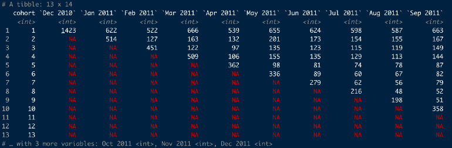
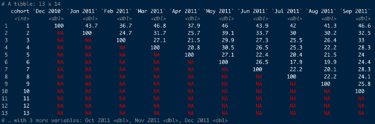
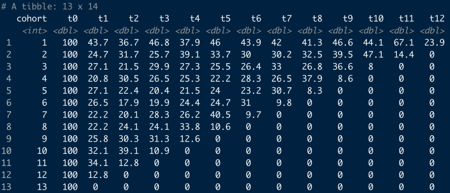
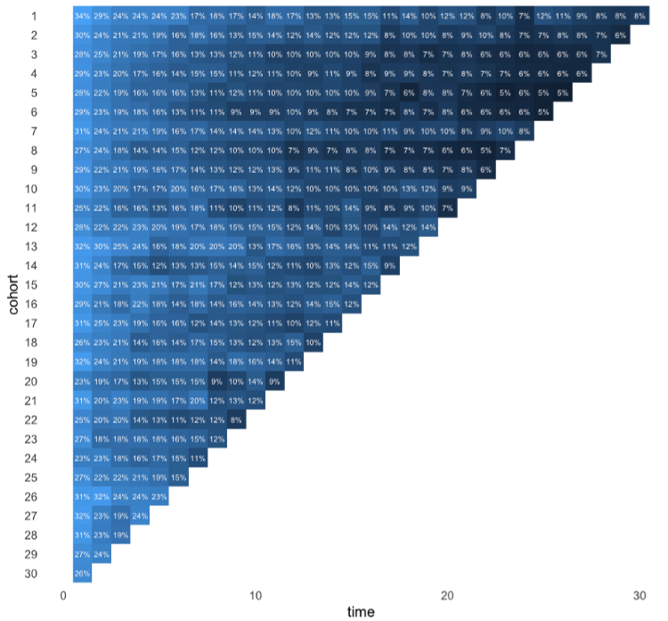
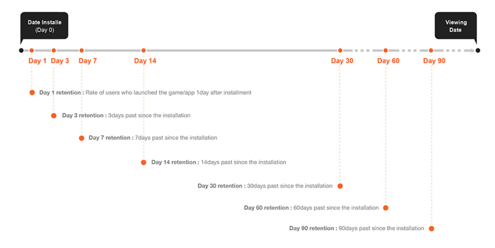
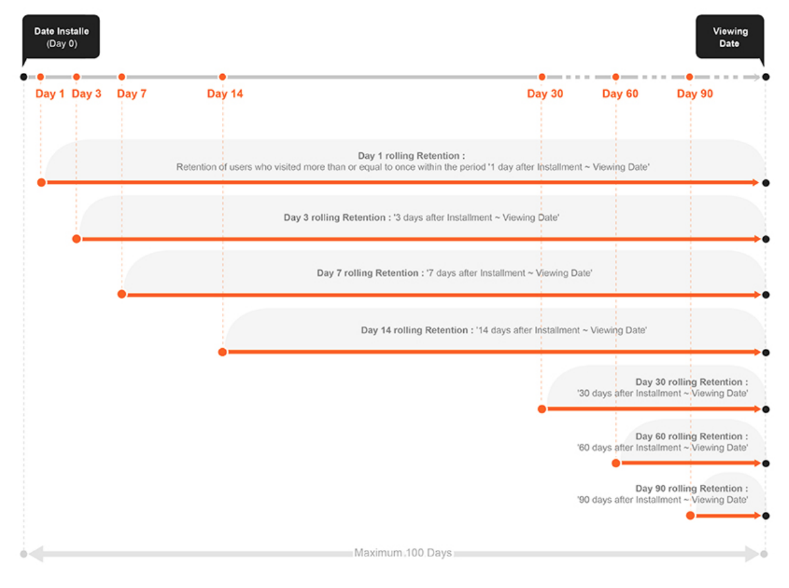
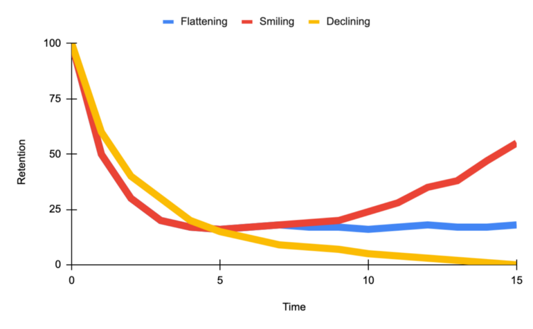
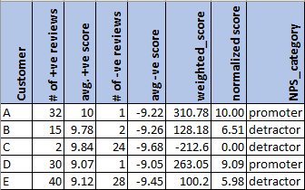

Product
Misc
- Fundamentally, in the context of for-profit businesses, almost any analytics problem can be cast as an optimization problem where some aspect of the business needs to be maximized or minimized. In most cases, it is some kind of revenue maximization or cost minimization.
- Also see
Price Optimization
Also see
Notes from:
Allows pricing to be used as a tool to target KPIs
- Forecasted sales are lower than expected. According to the price elasticity, which price will allow us to reach our sales target?
- Forecasted sales are higher than expected. According to the price elasticity, which price will increase profit while staying inline with our sales target.
Questions:
- How many unitss can we expect to sell at a given price?
- How does a 10% price change affect demand?
Data
- Variables are time series.
- Basic variables:
- Price
- Sales or orders
- Potential variables
- Competitor prices
- Logging this variable (as with your product’s Price) usually produces the best results.
- In-store alternatives
- Price
- Sales
- New promotional activities
- Dummy variable
- Seasonal effects
- Competitor prices
Price Elasticity of Demand (PED) - Measures the responsiveness of the demand to changes in price
\[ \epsilon_{\text{demand}} = \frac{\Delta \text{Demand}}{\Delta \text{Price}} \]- Almost always negative – except for luxury goods (Veblen) and Giffen goods(?)
- A positive elasticity can indicate an omitted variable.
- \(|\; \text{PED}\;| \lt 1\%\) means relatively inelastic where demand hardly changes in response to a change in price
- \(|\; \text{PED}\;| \gt 1\%\) means relatively elastic where demand is responsive to price changes
- \(|\; \text{PED}\;| = 1%\) means unitary elastic where revenue is maximized and price is optimized
- Coefficients aren’t decimal percents (e.g. the regression coefficient of 1% elasticity will be 1 not 0.01)
- Coefficient interpreted as a 1% increase in Price results in a \(\beta_1\) percent change in Demand.
- Common Models
\[ \begin{array}{lll} \text{Transformation} & \text{Function} & \text{Elasticity} \\ \hline \text{Level Level} & Y\;=\;a+bX & b \cdot \frac {X} {Y} \\ \text{Log Level} & \log Y = a+bx & b \cdot X \\ \text{Level-Log} & Y = a + b \cdot \log X & \frac {b} {Y} \\ \text{Log-Log} & \log Y = a + b \cdot \log X & b \\ \hline \end{array} \]- Where \(Y\) is demand (e.g. sales, orders), and \(X\) is price
- Log-Log fits more closely with economic theory and is usually the optimal choice.
Total Cost
\[ \text{Total Cost} = \text{Fixed Cost} + (\text{Units Sold} \cdot \text{Unit Cost}) \]- These costs can be per day, per month, etc.
Optimal Price
\[ \text{Optimal Price} = \frac{\text{Elasticity} \cdot \text{Unit Cost}}{1 + \text{Elasticity}} \]- Optimal price doesn’t depend on fixed costs
Profit
\[ \text{Profit} = (\text{Optimal Price} \cdot \text{Units Sold}) - \text{Total Cost} \]Cross Price Elasticity - The responsiveness of demand for your product to changes in a competitor’s price
\[ \epsilon_{\text{competitor}} = \frac{\Delta \text{Demand}}{\Delta \text{Price}_{\text{competitor}}} \]- Positive values are common. Higher prices of a competitor (substitutional good) should result in increase sales for your product. Thus, a positive elasticity.
- Negative values can occur if the competitor raises prices on a complementary good, which is good that is often purchased along with your product.
- A rise in the price of oil filters many depress sales of engine oil.
Multivariable Log-Log model
\[ \begin{align} \log Y_{\text{demand}} = &\alpha + \epsilon_{\text{demand}} \cdot \log (X_{\text{price}}) \\ &+ \epsilon_{\text{competitor}} \cdot \log (X_\text{comp price}) \\ &+ \beta_1 \cdot \mathbb{I}(X_{\text{promo}}) + \beta_2 \cdot \mathbb{I}(X_{\text{summer}}) \end{align} \]- Additionally includes Competitor Price and dummy variables for a Promotional Campaign and Summer months
Use price elasticity of demand (PED) to find the price required to meet a sales target
Cobb-Douglas function
\[ \begin{align} &Q(p) = A \cdot p^\epsilon \\ &\rightarrow Q_0 - Q(p) = Q_0 - A \cdot p^\epsilon \\ \\ &\text{Set} \: Q_0 - Q(p) = 0 \\ &\rightarrow p = \left(\frac{Q_0}{A}\right)^{\frac{1}{\epsilon}} \end{align} \]- \(Q(p)\) is quantity sold as a function of price, \(p\)
- \(A\) is forecasted sales
- \(\epsilon\) is the PED
- \(Q_0\) is our sales target
- \(Q_0 - Q(p) = 0\) since we want our quantity sold to equal our sales target
We can use ARIMA, ETS, etc to forecast sales for the period that \(Q_0\) covers, model the price elasticity, and then calculate the price.
- Use CIs for the PED to give a range of prices
- Also consider PIs for the forecast
Cost Benefit Analysis (CBA)
Notes from: Cost-benefit analysis in R
Also see
- Projects, Planning >> Decision Model
- Optimization >> Budget Allocation
- Video Bizsci learning lab 68
{tidyquant} has excel functions for Net Present Value (NPV), Future Value of Cashflow (FV), and Present Value of Future Cashflow (PV)
Net Present Value - The real value of benefits in today’s dollars minus the real value of costs (where the “real” value means future values are discounted by some chosen discount rate - the choice of which makes a big difference to how much the analysis values either the short term or the long term)
\[ \begin{align} \text{NPV} = &\sum_{i=0}^{m-1} \mbox{benefit}_i \cdot (1-\mbox{discount})^i \\ &- \sum_{i=0}^{m-1} \mbox{cost}_i \cdot (1-\mbox{discount})^i \end{align} \]- Also see
- \(m\) is the number of years (or whatever time unit) for the investment
- \(\mbox{benefit}\) is the benefit value (e.g. revenue) for each year of the investment (vector)
- \(\mbox{cost}\) is the cost value for each year of the investment (vector)
- \(\mbox{discount}\) is the discount rate (decimal)
- Minimum expected return on investment. 10% is common and 5% is usually the minimum, i.e. a replacement-level ROI. If the discount rate is 10% percent, then that says that the current investment strategies are yielding at least 10%, so this one should be at least that good. The thinking is, “why spend money on this investment if it has a lower discount rate instead of putting it to work in one of the other strategies that’s yielding at least 10%?”
- Example references New Zealand and Australia governmental guidelines for various departments that range from 5-7%.
- Cost and benefit must have the same unit of measurement (e.g. dollars) and be vectors of equal length.
- Notice i starts at 0 and goes to m-1 (investment window remains unchanged). This is because the initial year is “discounted” (whatever that means). The discount quantity in the equation goes to 1 when i = 0, so it’s not a factor in the calculation for the initial year.
- Basic Simulation: Can use the Gamma Distribution to sample different random values for costs and benefits. Then plug into a npv function with a specified discount rate to get a simulated distribution of potential values. Visualize with a density graph.
- This models the potential uncertainty with costs and benefits.
Internal Rate of Return - The discount rate at which benefits break even with costs
- Also see
- Finance, Valuation >> Internal Rate of Return, Weighted Cost of Capital
- Project, Planning >> Decision Models >> Terms >> Cost of Capital, Internal Rate of Return
- Morgan Stanley’s Guide to Cost of Capital (Also in R >> Documents >> Business)
- Thread about the guide
- If the internal rate of return is higher than your cost of capital (aka hurdle rate) and higher than the rate of return of other uses of capital, then it is worth investing in.
- The Cost of Capital typically calculated as Weighted Average Cost of Capital (WACC)
\[ \text{WACC} = w_1 \cdot \mbox{cost of equity} + w_2 \cdot \mbox{cost of debt} \]- \(w_1\), \(w_2\) depend on the company’s capital structure (e.g. 70% equity, 30% debt)
- \(\mbox{cost of equity}\): Approximated using capital asset pricing model (CAPM
\[ \mbox{CAPM} = R_f + \beta(R_m -R_f) \]- \(R_f\): The risk-free rate of return
- \(R_m\): The market rate of return
- \(\beta\): The risk estimate or a company’s stock beta or a similar public company’s stock beta
- \(\text{cost of debt}\)
\[ \text{cost of debt} = \frac{\mbox{interest expense} \cdot (1-T)}{\mbox{total debt}} \]- \(\text{interest expense}\): The interest paid on company’s current debt
- Since interest expense is tax-deductible, the debt is calculated on an after-tax basis
- \(T\) : The company’s marginal tax rate
- \(\text{interest expense}\): The interest paid on company’s current debt
- As of January 2019, transportation in railroads has the highest cost of capital at 11.17%. The lowest cost of capital can be claimed by non-bank and insurance financial services companies at 2.79%. The cost of capital is also high among both biotech and pharmaceutical drug companies, steel manufacturers, Internet (software) companies, and integrated oil and gas companies.Those industries tend to require significant capital investment in research, development, equipment, and factories.
- Compute with an optimization function
- Can calculate for specific cost, benefit, and discount rate or use the simulated values (above) to get a density of potential values.
- Also see
Example: Adding uncertainty to cost and benefit estimates
uncertainty <- 0.10 # from example # ============= Costs ================= initial_cost <- rnorm(n = 1, mean = initial_cost_est, sd = initial_cost * uncertainty) ongoing_costs <- rnorm(n = m-1, mean = fixed_costs,, sd = fixed_costs * uncertainty) ad_hoc_costs <- rbinom(n = m-1, size = 1, p = ad_hoc_prob) remaining_costs <- ongoing_costs + ad_hoc_costs cost <- c(initial_cost, remaining_costs) # ============= benefits =============== customer_level_shift <- rnorm(n = 1, mean = customer_level_shif_est, sd = customer_level_shift * uncertainty) customer_growth <- rnorm(n = 1, mean = customer_growth_est, sd = customer_growth_est * uncertainty) # m-1 since starting at 0 customers <- customer_level_shift * (1 + customer_growth) ^ (0 : m-1) customer_spend <- rnorm(n = 1, mean = customer_spend_est, sd = customer_spend_est * uncertainty) benefits <- customers * customer_spend- All *_est variables are given to us from marketing or whoever the stakeholders are
- m is the investment window
- customer_level_shift: The number of customers attained in year 0.
- customer_growth: The growth of the customer base after year 0
Customer Journey
- Misc
- I think these notes are from a biz sci video but I don’t know which one
- Also see
- Overview
- EDA on channel groups that lead to transactions for 1st purchasers, 2nd purchasers, etc.
- Use binary classification model to develop a strategy around predictor variables that increase or decrease the probability that a customer will perform a transaction
- Process
- Define the different scenarios to cover
- Make groups of experts so they can cover each scenario
- Over the user journey in our application, map each user behaviour to the events or data
- Prioritize per step and select the minimum events needed to explain the user behaviour
- Combine all the events for the data scientists to use as features for the segmentation or modelling
- Google Store Data - visitor_id, session_id (each row is a session), channel_group, date, total_transactions (# of transactions per session, na = no transaction)
- Marketing Channels:
- Organic - Google Search
- Direct - Email
- Referral - Hyperlink on a website
- Display - Ads on websites
- Path Splitting
- cust_id
- group by cust, transaction, channel
- I don’t know what this is.
- cust_id
- Cleaning steps
mutate(is_trans = ifelse(is.na(total_transactions), 0, 1)group_by(visitor_id)arrange(date)mutate(purch_num = cumsum(is_trans)to create var so 1st purch = 1, 2nd purch = 2, …, etcmutate(path = lag(purch_num)to create a pathmutate(visitor_path_id = paste0(visitor_id, "_", path))- Create an indicator to show whether a visitor_path_id ended in transaction or not
- Filter only paths that ended in transaction
- Count number of visitor_path_ids for each purch_num (1st purchase, …) and remove transaction numbers with few visitor_path_ids
- Visualize
- Ball and Stick: (plotly with buttons that select 1st purchase, 2nd purchase, … etc.)
- Which channel types have the greatest proportion of transactions for 1st purchasers, 2nd purchasers, etc.?
- Y-Axis: Channel Type
- X-Axis: The percent ending in transaction
- Heatmap: Either purch_num or vistor_path_id or somethiing else vs channel
- Think this answers the same question as the ball and stick
- Y-Axis: 1st purchase, 2nd purchase, … , last purchase,
- X-Axis: Channel Type
- Cells = percent that ended in transaction, colored by percent
- Ball and Stick: (plotly with buttons that select 1st purchase, 2nd purchase, … etc.)
- Models (include visitor_path_ids that did NOT end in a transaction and make channels into indicator vars)
- Binary Target: is_trans
- Use model agnostic diagnostics to examine high probability predictions that didn’t convert.
- Develop strategy around predictor variables that lead to that prediction (increase or decrease value) to nudge customer into transaction.
- Binary Target: is_trans
Conversion Funnel
- Misc
- Notes from a BizSci learning lab (like lab 24 or something)
- Uses BigQuery and Google Analytics
- Also see
- Google Analytics 360 is used
- More granularity than free version
- Can schedule to export daily (nested) table of data to BiqQuery
- JSON data (amazon redshift, azure use postgres)
- Notes from a BizSci learning lab (like lab 24 or something)
- Questions:
- Which steps in conversion path are most important?
- How many web page hits are involved in a purchase per page
- Which step in the path are custumers getting hung up on?
- visit_id is the session id
- Each visit_id has a hits column with a nested tibble which has all the pages the customer visited
- A hit is a visit to a webpage (pagePath)
- Google Analytics data can be imported into BigQuery
- {bigrquery}
- Connection to BigQuery
Connect to
bigrquery::bq_authdbconnectcon <- dbConnect( bigrquery::bigquery(), project = "publicdata", dataset = "samples", billing = project_id )dbplyr::tbl, select(visit_id, hits),collectpluck("hits", 1, "page"),tojson,prettify,fromjson,unnest(cols = pagePath:pagPathLevelId)
- How many unique visitors per day?
dbplyr::tbl (table_*),distinct,count,collect- * is a wildcard. Processes code on all tables in project in BigQuery without bringing the data into R before performing the calc.
- Total transactions over time period
- Can’t use dbplyr for the lower levels of nested tables. Have to use sql
SELECT date,SUM(totals.transactions) AS total_transactions- totals.transactions is in the form column.subcolumn for json structured tables
FROM "biquery-public-blahblah"GROUP BY dataORDER BY total_transactions
- Transactions by referral
SELECT trafficsource.mediumthen basically same query as above
- What paths are customers taking by session that lead to conversion?
- Join a couple tables by visit_id and
collectinto R- Columns: fulluserid, visit_id, hitnumber, pagepath
- Columns: visit_id, total_transaction_revenue (which is scaled to millions for some reason)
- Take joined table and:
filter transaction_rev >0to get only transactions that lead to “conversions” (purchases)countnumber of rows per pagePathsummarizemedian_hit_number, median_visit_numberggplot(pagePath, n, fill = n),geom_bar,coord_flip
- Add incentives to customers to get to the top pages for those values
- Join a couple tables by visit_id and
Market Basket Analysis
- Association Rules
- Key metrics
- Support: The percentage of transactions involving of a particulart sku (e.g. sku1) on average
\[ \text{support} = \frac{\text{number of sku1 sold}}{\text{total transactions}} \] - Confidence: Of the transactions involving sku1, the percentage also involved sku2.
\[ \text{confidence} = \frac{\mbox{support}(\mbox{sku1}, \mbox{sku2})}{\mbox{support}(\mbox{sku1})} \]- i.e. Equivalent to the probability that someone will buy sku2 given they also bought sku1 (see Basket Complementary)
- support(sku1, sku2) = num_sku1_sku2_sold / num_transactions
- Lift : The probability of someone buying sku2 after having already bought sku1 or vice versa.
\[ \text{Lift} = \frac{\mbox{support}(\mbox{sku1}, \mbox{sku2})}{\mbox{support}(\mbox{sku1}) \cdot \mbox{support}(\mbox{sku2})} \]- Guidelines
- Lift > 1 positive association between sku1 and sku2 (more likely to buy together)
- Lift < 1 negeative association between sku2 and sku2 (less likely to buy together)
- Guidelines
- Support: The percentage of transactions involving of a particulart sku (e.g. sku1) on average
- Key metrics
- Basket Complementary (article)

Using confidences of pairs of products and the confidence of their reciprocal to rank cross-selling recommendations
Transactions for a user listed on the left
\(\mbox{Confidence}(\mbox{Cornflakes} \rightarrow \mbox{Milk})\) is the confidence which is the probability that someone wil buy milk given they’ve also bought cornflakes
num_corn_milk_sold/num_corn_sold #> 0.40- Equivalent to formula in Key Metrics
\(\mbox{Confidence}(\mbox{Milk} \rightarrow \mbox{Cornflakes})\)
num_corn_milk_sold/num_milk_sold #> 0.33The more similar the two probabilities are for each pair, the closer the point comes to the line of equality (the red dashed line that runs diagonally through the origin), and the more complementary the items become.
It’s rare that a dot will land exactly on the line of equality, so the green and orange lines (tolerances) parallel to the red line mark how far off a dot is from this ideal setting, using different levels of tolerance.
Large asymmetries indicate one-sided complementarity. Such imbalances will be quite common when, for instance, items of hugely different prices are involved.
- Example: When someone buys a house, for example, they may want to buy a bookcase, but buying a bookcase doesn’t mean someone wants to buy a house: this would be an instance of one-sided complementarity.
- Me: So choosing recommendations should take into consideration the price of item in the cart and select one-sided asymmetries with high confidences that are similar to that price or less.
Tolerances categorize and rank pairs of products
- Complementary at such-and-such a tolerance level — 0%, 1%, 5%, etc. — generating a score of sorts.
- In cases where a dot representing the two-way dependencies between two items falls within a narrow band — corresponding to a smaller tolerance — the more inseparable the items are, and the more sensible a cross-selling recommendation may become.
Cohort Analysis
Visualizing user retention is a useful way for e.g. retail and subscription businesses to keep track of how long customers and users tend to stay with the them and spot differences in how cohort sizes change over time.
Misc
- Cohort - A group of new users who start an interaction (e.g. subscription, logging on to a website) on the same date
- {cohort} has some nice cleaning functions
- A grouped line chart would be another visualization option
Compare Cohorts by Month
Table showing cohort interactions over time
Example
online_cohorts %>% cohort_table_month(id_var = CustomerID, date = InvoiceDate)Takes tibble with a customer id column and invoice date column and creates a monthly cohort table
Cohort 1 all had their first purchase on Dec 2010 and only 622 customers from this group also made a purchase in Jan 2011
With this function, customers don’t have make a purchase in Jan 2011 in order to be counted in Feb 2011
As a percent
online_cohorts %>% cohort_table_month(id_var = CustomerID, date = InvoiceDate) %>% cohort_table_pct()- 36.7% of the Dec 2010 cohort made a purchase in Feb 2011
Compare Cohorts by Period
online_cohorts %>% cohort_table_month(id_var = CustomerID, date = InvoiceDate) %>% shift_left_pct()- Cohort1’s t0 is Dec 2010 and cohort2’s t0 is Jan 2011
Heatmap
Convert to long format
online_cohorts %>% cohort_table_month(id_var = CustomerID, date = InvoiceDate) %>% cohort_table_pct() %>% pivot_longer(-cohort) %>% filter(name != "t0") # these are all 100 so not interesting- Columns: cohort, name (i.e. period), value (percentage)
Heatmap Table
Code
online_cohorts %>% mutate(time = as.numeric(str_remove(name, "t"))) %>% ggplot(aes(time, reorder(cohort, desc(cohort)))) + geom_raster(aes(fill = log(value))) + coord_equal(ratio = 1) + geom_text(aes(label = glue::glue("{round(value,0){style='color: #990000'}[}]{style='color: #990000'}%")), size = 3, colour = "snow") + scale_fill_gradient(guide = "none") + theme_minimal(base_size = 16) + theme(panel.grid = element_blank(), panel.border = element_blank()) + labs(y = "cohort")
{kind=link}
{kind=link}
{kind=link}
{kind=link}
Retention Analysis
- Retention Rate - Measures the proportion of users that return to your product over some specified time
- 4 choices to make before calculation the retention rate:
- Retention Rate Type
- User Type
- Action Type
- Cohorts
- 4 choices to make before calculation the retention rate:
Components
- Retention Rate Types
- N-day (or week or month) Retention
- Measures among users who first used the product at day 0, what proportion of them are still active at day N.
- N indicates the end point of the interval
- Rolling Retention
- End point is the day you view the data and the choice of starting point determines the length of the interval
- Bracket Retention
- A proportion of users after day 0, that had activity during some interval. This interval occurs sometime after day 0 and the data viewing date.
- Example: Pinterest
- Measures “the percentage of new signups that are still doing key actions during a one-week time window of 28–35 days after signup”.
- N-day (or week or month) Retention
- User
- Types
- New User
- Churned User: Inactive after day x
- Inactive User: Inactive from day 0 to day x
- Reactive User: Active after churned/inactive
- Active User: Active users who are not new and not reactive
- New User Retention measures the proportion of new users who stay active.
- Active User Retention measures the proportion of active users who stay active
- Types
- Action
- Choosing an action
- More interested in monetization values?
- Are you in a growth stage where you looking to retain your users through certain actions?
- Types
- Visiting the product page
- Staying for a certain amount of time
- Conducting certain actions (e.g.. scrolling)
- Purchasing a product
- Choosing an action
- Cohorts
- Demographics: gender, age, etc.
- Acquisition: acquisition time, acquisition source, etc.
- Behavior
{kind=link}
{kind=link}
Analysis
- Calculate Retention Rates
- Recommendations
- Start with the N-day/week/month retention
- Start with new users (especially for new products)
- Determine the time interval
- plot how frequently users use the product
- plot % users who use the product vs times with various intervals
- plot retention with various intervals
- see which one makes sense for your product.
- It’s okay to include more than one time interval in your analysis.
- Retention Rate vs Time
- Smiling curve when users come back more and more over time.
- Declining curve signifies danger
- Flattening curve signifies a healthy product.
- The goal for a product is to shift the curve up and flatten or uptail the curve
- Recommendations
- Descriptive statistics and correlations
- Survival model
- Dashboard (all available cohorts/groups)
- Retention Curve
- Triangle Retention Table (See Cohort Analysis)
- Cohort (date), New Users (count), Day 1, Day 2, …
- Every cohort has 100% for Day 0 so not necessary to include
- Cohort (date), New Users (count), Day 1, Day 2, …
- What is the user behavior that contributes to the moment a new user becomes a long-term customer?
- i.e. Find the user events and onboarding behaviors that are related to retention in future weeks/months.
- e.g. Facebook focuses on “getting 7 friends in 10 days.”
- How do the most successful long-term users form a habit to use the product?
- Descriptive analysis on long-term users
- Questions
- What features do they keep using?
- What attributes do they have?
- What is the user journey for them?
{kind=link}
Net Promoter Score (NPS)
- Use sentiment analysis on customer reviews and social media posts to generate a proxy for NPS based on sentiment scores.
- Use Cases
- Identify your brand’s promoters, detractors, and neutrals
- Calculate the % of promoters vs detractors to give you insights into which direction your brand is progressing. A higher % of promoters indicates potential revenue growth and vice versa indicates that your brand is going down.
- Specific text strings from extremely negative reviews will give you insights into areas of improvement. A simple word cloud for positive and negative reviews will give you insights into what works best for your brand and does not.
- The same exercise repeated every quarter will give you insights into the trend of customer experience — is there an increasing trend of promoters or an increasing trend of detractors?
- Also see Survey, Design >> Response Scales >> Net Promoter Score
- Process
- Calculate the sentiment score for each customer review.
- Min-Max Normalize scores to a range of 0 to 10
- For every customer, calculate the average sentiment score.
- Optional: weight score by number of reviews posted
- Stems from the idea that we would like to focus on customers posting frequent reviews rather than customers who buy/post very rarely
- Optional: weight score by number of reviews posted
- Categorize customers are promoters, neutrals, or detractors based on the average sentiment score.
- For ideas on bins, see Survey, Design >> Response Scales >> Net Promoter Score
- Calculate the sentiment score for each customer review.
- Example: Only split into promoters/detractors
